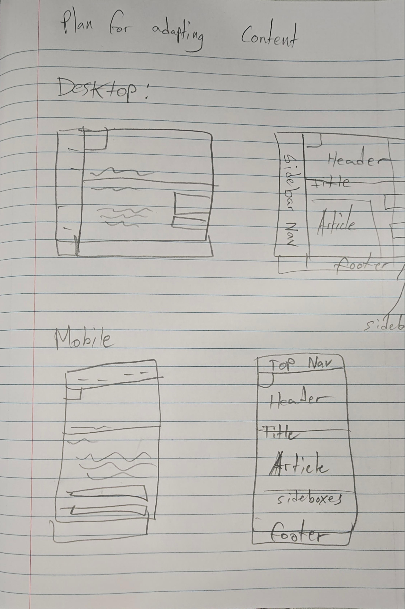

My goal is to make a page with a news article about the rising costs of orange juice. My audience is comprised of people who care about common goods and their prices. This influenced my design choices in my choosing of this layout.
I had a hard time figuring out how to make those sidebar box things, so I just made them rectangles. It's by far the biggest difference from the source page, but I don't know how to make that without making graphics for it, so I hope that they are alright as they are.
Adapting to content was a very tricky phase for me! Especially the responsiveness part. I spent a long time trying to get it right and to remove magic numbers from the scaling. You will see the variables I used to try and keep things consistent. But alas, I did use a ton of magic numbers. I was also having a lot of trouble with the side boxes, trying to figure out how I could position them thoughtfully along the article without cutting the grid up a lot and making keeping the widths of the columns even more difficult. But thank the lord for anchors!

This is the plan I followed when adapting to content phase 2, including plans for how I was going to do the navigation on both mobile and desktop.
The goal was to keep things as legible and clean as possible, and have the navigation be very easy to use. This was pretty difficult for me, and there are still things I would like to change if I had more time, namely the nav bar on very narrow mobile layouts, as I dont like the way it looks, and how short the buttons are since they are text and not a bigger button or something.
Overall, I think my page looks pretty nice! I think I did a good job making it responsive and visually appealing across many widths, hopefully you agree.
Oh and I still couldnt figure out how to make the sidebar boxes that funky shape from the design source. Sorry to dissapoint...
Pretty much exclusively from w3schools and MDN Web Docs but also a fair bit of reddit and stack overflow threads for specific tricks.
This page in particular was very helpful for letting me make variables for some of the sizes which offloaded some of the work from making it responsive
https://developer.mozilla.org/en-US/docs/Web/CSS/Reference/At-rules/@propertyAlso, I validated my css and html with https://www.cssportal.com/html-validator/